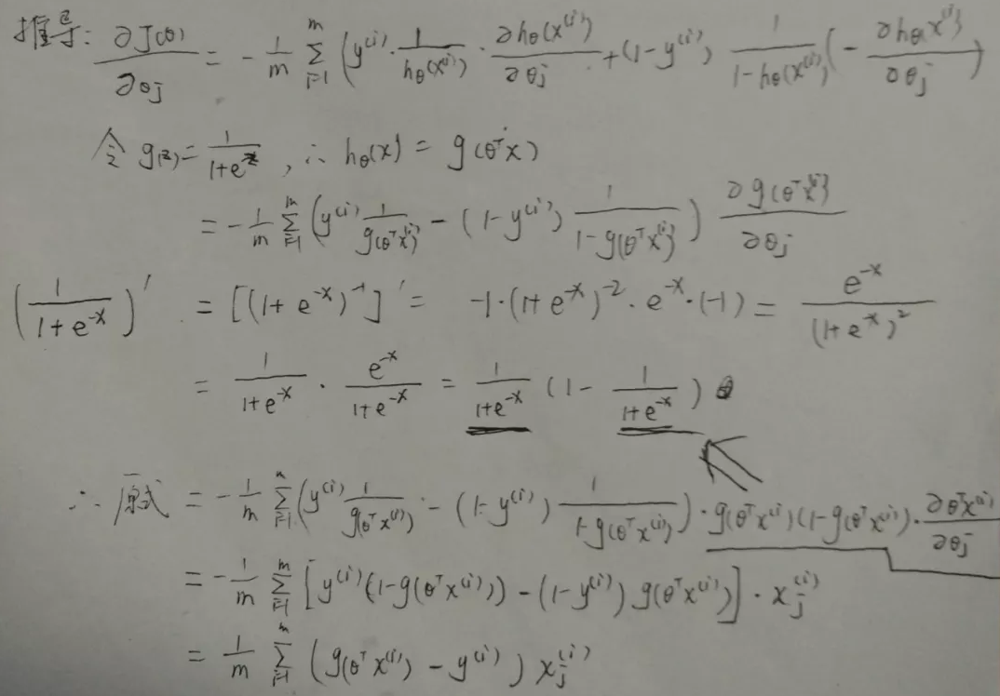
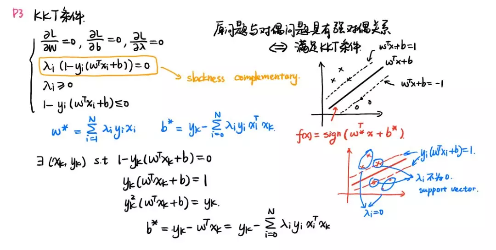

第 5 章 机器学习模型
5.1 掌握机器学习算法的三重境界
完整口述机器学习模型原理
这算是基本操作了，考验逻辑思维和表达能力。
手推机器学习算法原理

大家在学习《统计学习方法》或《机器学习》的时候，学完一章，要做到合上书，给你一张白纸，可以把本章算法每一步写的清清楚楚。这里顺便推荐一个我觉得非常不错的机器学习视频教程：shuhuai007大佬的《机器学习-白板推导系列》，大佬用21节课，在白板上一步一步推导算法，讲的非常详细，通俗易懂。

课程地址：
https://space.bilibili.com/97068901/channel/detail?cid=54167
有好心的同学将板书做了整理，非常美观，已更新到第19章：
https://github.com/ws13685555932/machine_learning_derivation
机器学习算法Python实现
这就比较考验代码能力了，虽然现在sklearn有现成的包可以调，还是建议大家将常见算法如LR、感知机、k近邻、贝叶斯、SVM、EM、Adaboost、决策树、随机森林、GBDT、XGBoost、聚类等等都试着用Python实现一下。这里推荐三个不错的资源：
作者用python实现了线性回归、逻辑回归、BP神经网络，SVM、K-Mean、PCA、异常检测等算法。
https://github.com/lawlite19/MachineLearning_Python
作者将统计学习方法第一版每一章的算法用自己的方式实现一遍，这可是被李航老师点赞的项目！
https://github.com/WenDesi/lihang_book_algorithm
普林斯顿博士后 David Bourgin 最近开源的项目：用 NumPy 手写所有主流 ML 模型，看了一下，代码可读性极强。
5.2 100天搞定机器学习系统（连载中）
大家好，100天搞定机器学习前54天是对Avik-Jain开源项目100-Days-Of-ML-Code的翻译+自己的理解 https://github.com/Avik-Jain/100-Days-Of-ML-Code 但是这个项目到54天就鸽掉了，十分可惜。 从第55天开始，我将续写这个栏目。 由于之前的文章太多参考Avik-Jain，我也将不定期对之前的章节进行重置。欢迎star
https://github.com/tjxj/100-Days-Of-ML-Code
100天搞定机器学习|Day19-20 加州理工学院公开课：机器学习与数据挖掘
100天搞定机器学习|Day21 Beautiful Soup
100天搞定机器学习|Day23-25 决策树及Python实现
100天搞定机器学习|day37 无公式理解反向传播算法之精髓
100天搞定机器学习|day39 Tensorflow Keras手写数字识别
100天搞定机器学习|day40-42 Tensorflow Keras识别猫狗
100天搞定机器学习|day43 几张GIF理解K-均值聚类原理
100天搞定机器学习|day44 k均值聚类数学推导与python实现
100天搞定机器学习|day45-53 《Python数据科学手册》
100天搞定机器学习|day54 聚类系列：层次聚类原理及案例
100天搞定机器学习|Day56 随机森林工作原理及调参实战（信用卡欺诈预测）
100天搞定机器学习|Day57 Adaboost知识手册(理论篇)
100天搞定机器学习|Day58 多分类机器学习中数据不平衡的处理（NSL-KDD 数据集+LightGBM)
100天搞定机器学习|Day61 手算+可视化，彻底理解XGBoost
100天搞定机器学习|Day63 彻底掌握 LightGBM
番外：
5.4 逻辑回归
5.5 决策树
5.8 XGBoost
5.10 贝叶斯
5.12 降维
为什么要进行数据降维?
所谓降维，即用一组个数为 d 的向量 Zi 来代表个数为 D 的向量 Xi 所包含的有用信息，其中 d<D，通俗来讲，即将高维度下降至低维度；将高维数据下降为低维数据。
通常，我们会发现大部分数据集的维度都会高达成百乃至上千，而经典的 MNIST，其维度都是 64。
但在实际应用中，我们所用到的有用信息却并不需要那么高的维度，而且每增加一维所需的样本个数呈指数级增长，这可能会直接带来极大的「维数灾难」;而数据降维就可以实现：
使得数据集更易使用
确保变量之间彼此独立
降低算法计算运算成本
去除噪音一旦我们能够正确处理这些信息，正确有效地进行降维，这将大大有助于减少计算量，进而提高机器运作效率。而数据降维，也常应用于文本处理、人脸识别、图片识别、自然语言处理等领域。
网上关于各种降维算法的资料参差不齐，同时大部分不提供源代码。这里有个 GitHub 项目整理了使用 Python 实现了 11 种经典的数据抽取(数据降维)算法，包括：PCA、LDA、MDS、LLE、TSNE 等，并附有相关资料、展示效果;非常适合机器学习初学者和刚刚入坑数据挖掘的小伙伴。